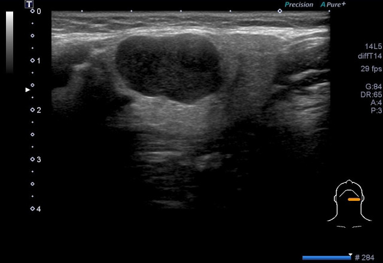

740 — Tuyến mang tai: pleomorphic, Warthin & ác tính / Salivary tumors
Tags: pattern:u-tuyen-bot vung:tuyen-bot
Mức chắc chắn (certainty): tổng hợp y văn (literature synthesis) — nhóm tự biên từ y văn mở, chưa gắn ca nguyên văn đơn lẻ.
1. Tổng quan — nhầy-sụn sáng T2 + lympho hút thuốc + tua gai đen T2
- Pleomorphic adenoma (38% u tuyến): nhầy-sụn — TẠI SAO T2 rất sáng + ADC > 1,5 + SWE cứng nhất: mô nhầy nhiều nước tự do; vỏ bao (trừ đa nhân!).
- Warthin (33%, hút thuốc, nam): lympho + nang — TẠI SAO T2 trung gian + bắt sớm-thải nhanh + nang: mô lympho giàu mạch.
- Ác tính (14,8%): tua gai + hoại tử + vôi + hạch — T2 đen + ADC < 1,0 + đàn hồi cứng không đều (OR vôi 14,8!).
2. Gamut khối góc hàm (Gamut)
- T2 sáng + ADC cao + vỏ bao: pleomorphic — cắt bảo tồn VII (tránh gieo!).
- Hút thuốc + nang + bắt-thải nhanh: Warthin — bóc (tái phát đa ổ!).
- Tua gai + T2 đen + hạch + vôi: ác tính — cắt rộng + nạo cổ + xạ.
- Thùy sâu qua hầm trâm-hàm: định khu sai — MRI + mổ đường cổ.
3. Bảng so sánh phân biệt (ma trận đối chiếu)
| Thực thể (entity) | Hình ảnh điển hình | Chốt vào (rule-in) | Chốt loại (rule-out) | Gợi ý xác nhận |
|---|---|---|---|---|
| Pleomorphic | T2 sáng + ADC > 1,5 + vỏ + SWE cứng | Nhầy-sụn + vỏ bao | Không vỏ + tua gai → ác | Cắt + giữ VII (đừng vỡ vỏ!) |
| Warthin | Nang + bắt sớm-thải nhanh + hút thuốc | Lympho + nang + nam hút thuốc | T2 sáng đều → pleomorphic | Bóc + theo dõi đa ổ |
| Ác tính | Tua gai + T2 đen + ADC < 1,0 + vôi + hạch | Không đều + vôi (OR 14,8) + ENE | Vỏ bao + T2 sáng → lành | Cắt rộng + cổ + xạ |
| Thùy sâu | Qua hầm trâm-hàm + đẩy mỡ bên hầu | Đường hầm + ICA bị đẩy | ICA ôm → bên hầu | MRI + mổ cổ |

Siêu âm + đàn hồi: lành vỏ bao (khác ác tính tua gai). Nguồn: Cheng et al., Front Oncol 2026 Fig. 2, CC BY 4.0.4. Protocol tuyến nước bọt
- Siêu âm + Doppler + đàn hồi (SWE/RTE) + MRI (T2/ADC/DCE) + Milan FNA khi khối góc hàm; VII trước mọi mổ mang tai.
flowchart TD
A[Khối góc hàm] --> B{T2 + ADC?}
B -->|Sáng + >1.5| C[Pleomorphic: cắt giữ VII]
B -->|Nang + thải nhanh| D[Warthin: bóc]
B -->|Đen + <1.0 + tua gai| E[Ác: cắt rộng + cổ]
5. Cạm bẫy
- Vỡ vỏ pleomorphic gieo tái phát đa nhân — bóc nguyên khối, đừng chọc nhiều lần.
- Thùy sâu tưởng bên hầu mổ sai đường — hầm trâm-hàm + ICA là chốt.
- Warthin 2 bên bỏ sót bên đối diện — siêu âm cả 2 tuyến + tiền sử thuốc lá.
6. Tự lượng giá — Blind Quiz
Ca 1 — Nữ 46 tuổi khối mang tai trái. Đọc siêu âm + đàn hồi.
- Hỏi: lành hay ác? Mổ thế nào để không liệt mặt?
Bấm để hiện đáp án
- Dấu hiệu (findings): bầu dục thùy rõ + vỏ bao + T2 sáng + ADC cao.
- Chẩn đoán (diagnosis): pleomorphic adenoma — cắt bảo tồn dây VII, không vỡ vỏ (gieo tái phát!).
- Nguồn: Cheng et al., Fig. 2, CC BY 4.0.
Ca 2 — Tua gai + T2 đen + hạch cổ hoại tử: lành hay ác? (Bảng mục 3.)
Bấm để hiện đáp án
- Ác tính tuyến nước bọt: cắt rộng + nạo cổ + xạ (ENE + Milan V–VI).
Bài liên quan chéo
- 700 – Tổng quan Đầu Cổ
- 750 – Hạch cổ (ENE)
- 230 – Tuyến giáp (FNA cổ)
Không dùng để chẩn đoán độc lập khi chưa có người hướng dẫn.